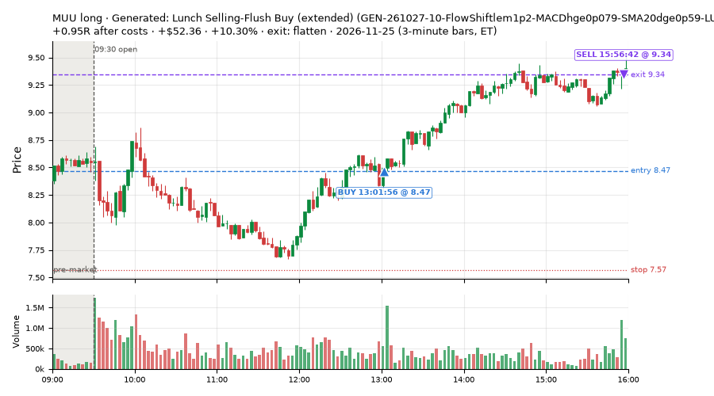
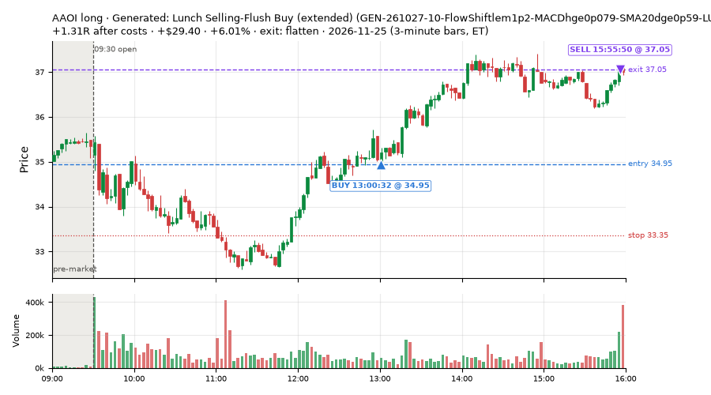
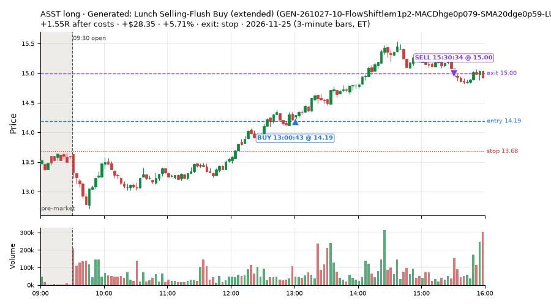
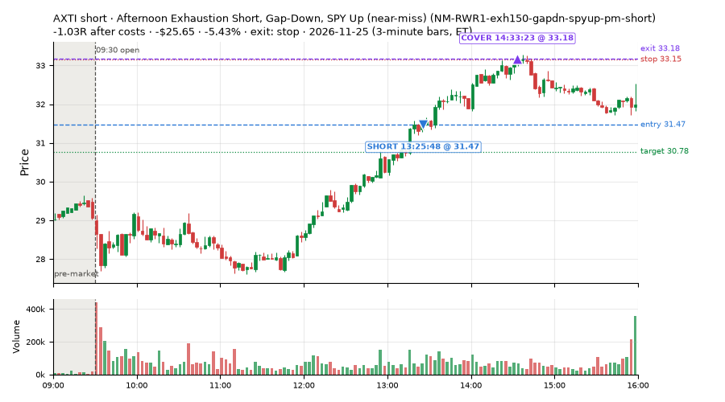
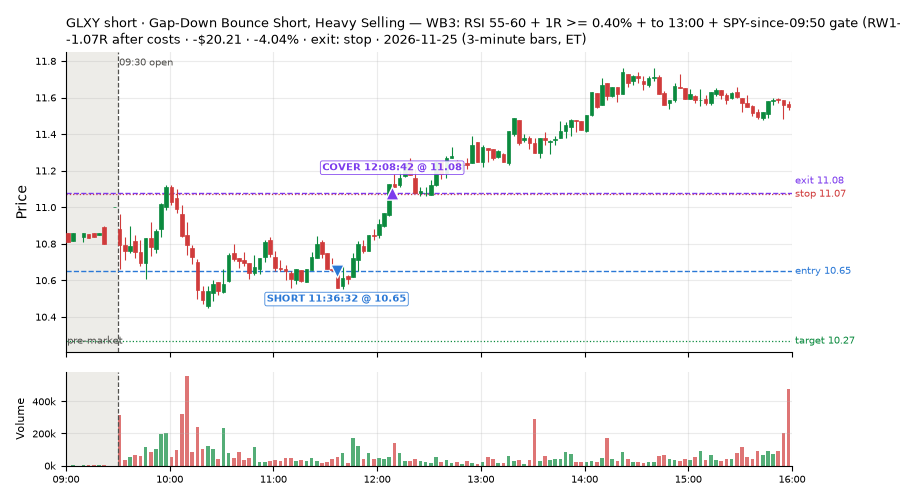
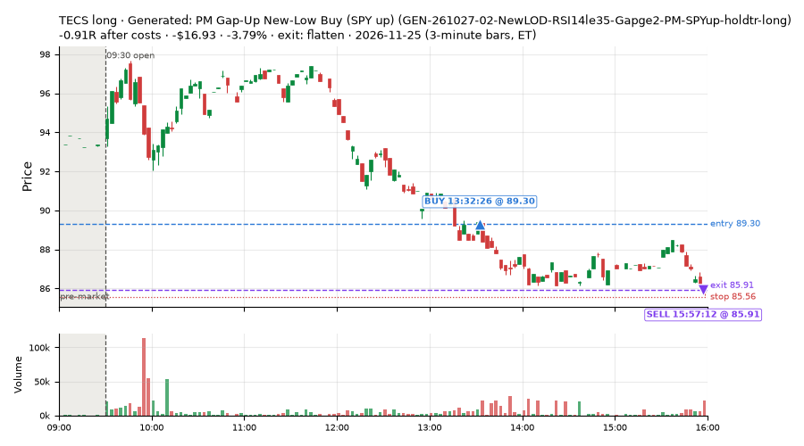
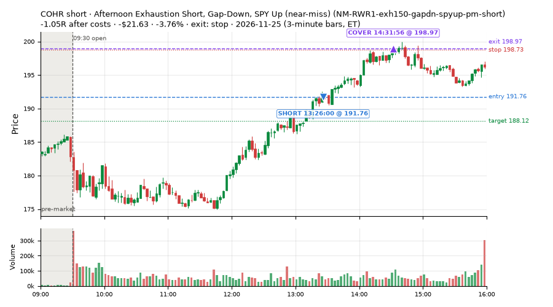
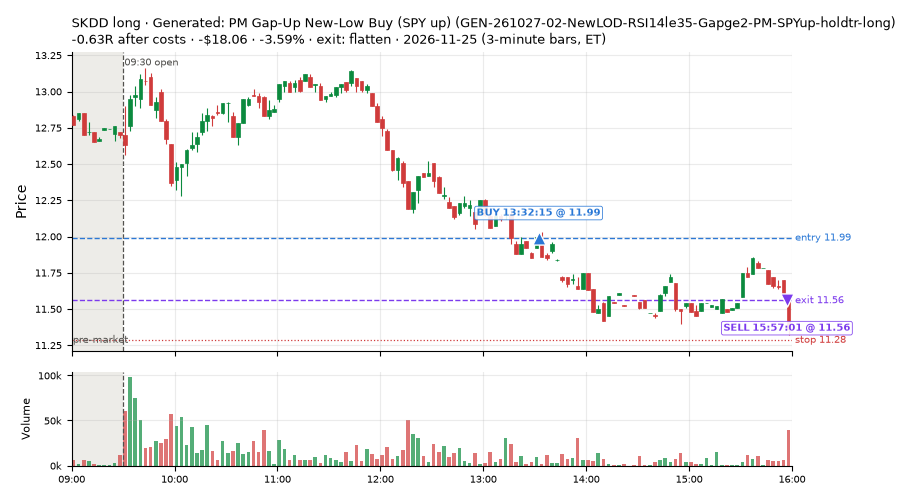

235 trades · win rate 58% · P/L $271.60
PROBATION: no live setup has passed both locked test periods. 10 owner-directed setups added 2026-10-08 (MarcoFlow top 5 + 5 new), untested live. RW6G1 (RW6 + VWAP band guard) added 2026-10-09, probation.

| Symbol | Setup | Side | In | Out | Entry | Exit | Exit reason | % gained | P/L |
|---|---|---|---|---|---|---|---|---|---|
| MUU | Generated: Lunch Selling-Flush Buy (extended) (GEN-261027-10-FlowShiftlem1p2-MACDhge0p079-SMA20dge0p59-LUNCH-BRopgt0p65-holdtr-long) | long | 13:01 | 15:56 | 8.47 | 9.34 | flatten | +10.30% | $52.36 |
| AAOI | Generated: Lunch Selling-Flush Buy (extended) (GEN-261027-10-FlowShiftlem1p2-MACDhge0p079-SMA20dge0p59-LUNCH-BRopgt0p65-holdtr-long) | long | 13:00 | 15:55 | 34.95 | 37.05 | flatten | +6.01% | $29.40 |
| ASST | Generated: Lunch Selling-Flush Buy (extended) (GEN-261027-10-FlowShiftlem1p2-MACDhge0p079-SMA20dge0p59-LUNCH-BRopgt0p65-holdtr-long) | long | 13:00 | 15:30 | 14.19 | 15.00 | stop | +5.71% | $28.35 |
| Symbol | Setup | Side | In | Out | Entry | Exit | Exit reason | % lost | P/L |
|---|---|---|---|---|---|---|---|---|---|
| AXTI | NM-RWR1-exh150-gapdn-spyup-pm-short | short | 13:25 | 14:33 | 31.47 | 33.18 | stop | -5.43% | $-25.65 |
| GLXY | RW1-gapdn-bounce-flowsell-short-FD-WB3 | short | 11:36 | 12:08 | 10.65 | 11.08 | stop | -4.04% | $-20.21 |
| TECS | GEN-261027-02-NewLOD-RSI14le35-Gapge2-PM-SPYup-holdtr-long | long | 13:32 | 15:57 | 89.30 | 85.91 | flatten | -3.79% | $-16.93 |
| COHR | NM-RWR1-exh150-gapdn-spyup-pm-short | short | 13:26 | 14:31 | 191.76 | 198.97 | stop | -3.76% | $-21.63 |
| SKDD | GEN-261027-02-NewLOD-RSI14le35-Gapge2-PM-SPYup-holdtr-long | long | 13:32 | 15:57 | 11.99 | 11.56 | flatten | -3.59% | $-18.06 |








Signal to fill: median 2s, 90th percentile 3s (234 trades). Bars close each minute; the order follows the bar close.
Best excursion (MFE): median 0.48R; worst (MAE) median 0.38R. 26% of trades never got +0.25R in our favour; 3 reached +1R and still closed at or below 0.
| Symbol | Setup | Best R | Worst R | Closed R |
|---|---|---|---|---|
| SNK | GEN-261027-02-NewLOD-RSI14le35-Gapge2-PM-SPYup-holdtr-long | +0.92 | -1.11 | -1.13 |
| WTW | GEN-261027-10-FlowShiftlem1p2-MACDhge0p079-SMA20dge0p59-LUNCH-BRopgt0p65-holdtr-long | +0.48 | -1.09 | -1.16 |
| BTSG | GEN-261027-10-FlowShiftlem1p2-MACDhge0p079-SMA20dge0p59-LUNCH-BRopgt0p65-holdtr-long | +0.52 | -1.01 | -1.05 |
| ARKK | NM-RWR1-exh150-gapdn-spyup-pm-short | +0.48 | -1.06 | -1.07 |
| GLL | GEN-261027-02-NewLOD-RSI14le35-Gapge2-PM-SPYup-holdtr-long | +0.48 | -1.27 | -1.06 |
| Entry time | Trades | Win | Avg R | P/L |
|---|---|---|---|---|
| 09:50-10:30 | 3 | 67% | +0.10 | $2.02 |
| 10:30-11:30 | 15 | 93% | +0.23 | $53.65 |
| 11:30-13:00 | 47 | 77% | +0.44 | $177.93 |
| 13:00-14:00 | 126 | 48% | -0.07 | $33.29 |
| 14:00-16:00 | 44 | 55% | -0.03 | $4.71 |
| Setup | Trades | Win | Avg R after costs | Adj R (net of SPY) | Avg R ex-market (all sessions) | P/L |
|---|---|---|---|---|---|---|
| Failed Opening-Range-Low Break Long — WB5: cost filter, SPY gate, wider stop (CWT14-failbrk-orl-p10-long-WB5) | 21.0 | 90% | +0.16 | +0.04 | +0.05 (beta +0.31, n 121) | $60.98 |
| Late-Day ETF Dip Buy, High-Dispersion Days (ETFDISP-late-dip-hidisp-long) | 3.0 | 0% | -0.19 | -0.15 | -0.24 (beta -1.96, n 9) | $-11.54 |
| Generated: Late Volume Spike Buy (wide day) (GEN-261019-07-VolRatioge2-UpWickge0p59-DayRngVsPrevge1p5-LATE-SPYgt0p5-t05s1-long) | 27.0 | 63% | -0.01 | -0.06 | -0.02 (beta +0.47, n 27) | $-1.35 |
| Generated: PM Gap-Up New-Low Buy (SPY up) (GEN-261027-02-NewLOD-RSI14le35-Gapge2-PM-SPYup-holdtr-long) | 24.0 | 17% | -0.62 | -0.78 | -0.27 (beta -1.04, n 25) | $-158.43 |
| Generated: Lunch Selling-Flush Buy (extended) (GEN-261027-10-FlowShiftlem1p2-MACDhge0p079-SMA20dge0p59-LUNCH-BRopgt0p65-holdtr-long) | 98.0 | 81% | +0.59 | -0.11 | -0.13 (beta +0.76, n 145) | $687.76 |
| Index Dip Bounce 2 3x S&P (IDX2-spy075-0945-3x-trail) | 1.0 | 100% | +1.09 | +0.70 | – | $10.95 |
| Afternoon Exhaustion Short, Gap-Down, SPY Up (near-miss) (NM-RWR1-exh150-gapdn-spyup-pm-short) | 60.0 | 27% | -0.53 | -0.29 | +0.09 (beta -1.62, n 61) | $-296.56 |
| Gap-Down Bounce Short, Heavy Selling — WB3: RSI 55-60 + 1R >= 0.40% + to 13:00 + SPY-since-09:50 gate (RW1-gapdn-bounce-flowsell-short-FD-WB3) | 1.0 | 0% | -1.07 | -0.78 | -0.17 (beta -0.97, n 68) | $-20.21 |
Market direction (SPY, beta 1) accounted for $414.12 of today's $271.60; the rest ($-142.52) came from the setups themselves. Avg R net of SPY: -0.20 (incl. a hedge leg's cost; report only).
28 setups live today. Today: 713 signals, 235 taken, 15 lost because another setup held the symbol (2%). Since 2026-11-12 (10 sessions): 2506 signals, 1078 taken, 24 lost to other setups (1%). Peak open positions today 178 of 400 slots. Earnings blackout removed 118 symbols before scanning.
Simulated playing time (not live): 1426 what-if trades of signals not taken, avg +0.20R, 62% winners; of them 24 lost to another setup (avg -0.33R).
Silent: NM-RWN4-ns2-spyup05-notfri-short, GEN-261029-09-RangeExpge1p6-Since950ATRlem0p43-OPEN-BRvwgt0p5-hold-short, GEN-261028-05-EMAdChgge0p093-ORLdistlem0p42-LAM-QQQgt0p6-holdtr-long, CWT04-backside-vwaptest-a25-short, LD4-st4-breadthup-t1s05-long, GEN-261023-01-VWAPxUp-VWAPatrge0p33-LAM-SPYgt0p5-t05s05-short, GEN-261028-03-EMAdChgge0p15-VWAPxUp-Since950ATRlem0p43-LUNCH-SPYgt0p25-hold-long, GEN-261027-03-NewLOD-DayPosle0p19-SMA20dlem0p59-LAM-SPYgt0p5-hold-long, ULT-HV2-shock-snap-etf-long-K, GEN-261022-07-Z12lem1p9-FlowShiftlem0p96-ATRdge3p6-AM-BRopgt0p5-t1s1-short
| Prio | Setup | Today sig / taken | Sessions | Signals / taken / trades | Taken/day | Expected/day | Lost to other setups | Lost to (setup n) | Top skip reasons | SIMULATED: not-taken n / avg R / win | Verdict |
|---|---|---|---|---|---|---|---|---|---|---|---|
| 1 | Gap-Down Pop Fade (all day) — WB4: WB3 + SPY exit 0.40% RW5-heat30-flowsell-rsi5pop-gapdn-short-FD-WB4 | 0 / 0 | 7 | 43 / 26 / 26 | 3.71 | – | 0 | – | spread / quote / size 16, not shortable / shorts off 1 | 17 / -0.13R / 47% | ok 18.6 entries/week |
| 2 | Gap-Down Bounce Short, Heavy Selling — WB3: RSI 55-60 + 1R >= 0.40% + to 13:00 + SPY-since-09:50 gate RW1-gapdn-bounce-flowsell-short-FD-WB3 | 2 / 1 | 7 | 110 / 68 / 68 | 9.71 | – | 0 | – | spread / quote / size 26, other 13, not shortable / shorts off 3 | 42 / -0.18R / 40% | ok 48.6 entries/week |
| 3 | Generated: Late Pullback Buy (MACD rising) — WB5: 14:00-14:30, $100M ADV, breadth gate GEN-261027-01-MACDhge0p12-Ret15mATRlem0p069-LATE-BRvwgt0p5-t05s1-long-WB5 | 0 / 0 | 7 | 6 / 4 / 4 | 0.57 | – | 0 | – | spread / quote / size 1, other 1 | 2 / +0.42R / 100% | slow 2.9 entries/week; ~21 weeks to 60 trades |
| 4 | NS2 Short, SPY Up 0.5%, Not Friday (near-miss) NM-RWN4-ns2-spyup05-notfri-short | 0 / 0 | 4 | 0 / 0 / 0 | 0.00 | – | 0 | – | – | 0 / – | silent no signals in 4 session(s); no expected rate on file |
| 5 | Generated: Open Range-Expansion Short GEN-261029-09-RangeExpge1p6-Since950ATRlem0p43-OPEN-BRvwgt0p5-hold-short | 0 / 0 | 4 | 0 / 0 / 0 | 0.00 | – | 0 | – | – | 0 / – | silent no signals in 4 session(s); no expected rate on file |
| 6 | Monday Weak-RS NS3 Short (near-miss) NM-RWN5-ns3-mon-weakrs-short | 0 / 0 | 10 | 76 / 45 / 45 | 4.50 | – | 1 | IDX2-spy075-0945-3x-trail 1 | spread / quote / size 21, not shortable / shorts off 5, other 4 | 31 / -0.19R / 39% | ok 22.5 entries/week |
| 7 | Generated: Late Volume Spike Buy (wide day) GEN-261019-07-VolRatioge2-UpWickge0p59-DayRngVsPrevge1p5-LATE-SPYgt0p5-t05s1-long | 51 / 27 | 4 | 51 / 27 / 27 | 6.75 | – | 0 | – | other 14, spread / quote / size 10 | 24 / -0.04R / 38% | ok 33.8 entries/week |
| 8 | Generated: Lunch Selling-Flush Buy (extended) GEN-261027-10-FlowShiftlem1p2-MACDhge0p079-SMA20dge0p59-LUNCH-BRopgt0p65-holdtr-long | 380 / 98 | 4 | 451 / 145 / 145 | 36.25 | – | 4 | NM-RWR1-exh150-gapdn-spyup-pm-short 3, RW5-heat30-flowsell-rsi5pop-gapdn-short-FD-WB4 1 | other 238, spread / quote / size 64, symbol held by another setup 4 | 306 / +1.14R / 90% | ok 181.2 entries/week |
| 9 | Generated: Late-AM Below-Range Turn Buy GEN-261028-05-EMAdChgge0p093-ORLdistlem0p42-LAM-QQQgt0p6-holdtr-long | 0 / 0 | 4 | 0 / 0 / 0 | 0.00 | – | 0 | – | – | 0 / – | silent no signals in 4 session(s); no expected rate on file |
| 10 | Backside VWAP-Test Short (big runner) CWT04-backside-vwaptest-a25-short | 0 / 0 | 5 | 0 / 0 / 0 | 0.00 | – | 0 | – | – | 0 / – | silent no signals in 5 session(s); no expected rate on file |
| 11 | Index Dip Bounce 2 3x S&P IDX2-spy075-0945-3x-trail | 1 / 1 | 10 | 2 / 2 / 2 | 0.20 | – | 0 | – | – | 0 / – | slow 1.0 entries/week; ~60 weeks to 60 trades |
| 12 | * Oversold EMA Cross-Down with Breadth Turning Up (near-miss) LD4-st4-breadthup-t1s05-long | 0 / 0 | 10 | 0 / 0 / 0 | 0.00 | – | 0 | – | – | 0 / – | silent no signals in 10 session(s); no expected rate on file |
| 13 | Generated: Late-AM VWAP Pop Short (SPY up) GEN-261023-01-VWAPxUp-VWAPatrge0p33-LAM-SPYgt0p5-t05s05-short | 0 / 0 | 3 | 0 / 0 / 0 | 0.00 | – | 0 | – | – | 0 / – | silent no signals in 3 session(s); no expected rate on file |
| 14 | Generated: Open RSI Pop Reversal Short GEN-261029-10-RSIslopege19-Ret5mlem0p21-EMAdiffge0p29-OPEN-BRvwgt0p5-t1s1-short | 0 / 0 | 3 | 1 / 0 / 0 | 0.00 | – | 0 | – | spread / quote / size 1 | 1 / -1.14R / 0% | slow no entries yet |
| 15 | Generated: Lunch VWAP Reclaim Buy GEN-261028-03-EMAdChgge0p15-VWAPxUp-Since950ATRlem0p43-LUNCH-SPYgt0p25-hold-long | 0 / 0 | 3 | 0 / 0 / 0 | 0.00 | – | 0 | – | – | 0 / – | silent no signals in 3 session(s); no expected rate on file |
| 16 | Afternoon Exhaustion Short, Gap-Down, SPY Up (near-miss) NM-RWR1-exh150-gapdn-spyup-pm-short | 206 / 60 | 5 | 208 / 61 / 61 | 12.20 | – | 12 | GEN-261027-10-FlowShiftlem1p2-MACDhge0p079-SMA20dge0p59-LUNCH-BRopgt0p65-holdtr-long 12 | other 118, spread / quote / size 13, symbol held by another setup 12 | 147 / -0.61R / 14% | ok 61.0 entries/week |
| 17 | Generated: Midday Oversold Short (quiet day) GEN-261028-06-RSI5le13-VWAPatrlem0p15-DayRngVsPrevle0p34-MID-BRoplt0p35-hold-short | 0 / 0 | 3 | 1 / 1 / 1 | 0.33 | – | 0 | – | – | 0 / – | slow 1.7 entries/week; ~36 weeks to 60 trades |
| 18 | Generated: PM Runner Fade (SPY down) GEN-261019-09-EMAdChgge0p15-Since950ATRge0p6-PM-SPYltm0p5-t05s1-short | 0 / 0 | 8 | 53 / 8 / 8 | 1.00 | – | 0 | – | not shortable / shorts off 39, other 4, spread / quote / size 1 | 44 / +0.01R / 66% | slow 5.0 entries/week; ~12 weeks to 60 trades |
| 19 | Generated: Late Volume-Spike Low Buy GEN-261026-02-VolRatioge2-SMA20dlem0p58-BarsSinceLODle1-LATE-BRoplt0p35-t1s1-long | 0 / 0 | 8 | 98 / 64 / 64 | 8.00 | – | 1 | GEN-261029-06-EMAdChgge0p092-DayRngVsPrevle0p61-LATE-QQQltm0p3-t1s1-short 1 | other 17, spread / quote / size 15, symbol held by another setup 1 | 34 / -0.48R / 24% | ok 40.0 entries/week |
| 20 | Panic Flush Reversal (deep, 5x volume) CWT05-flush-m075-v5-long | 0 / 0 | 10 | 6 / 4 / 4 | 0.40 | – | 0 | – | spread / quote / size 1, broker rejected 1 | 2 / +0.41R / 100% | slow 2.0 entries/week; ~30 weeks to 60 trades |
| 21 | Generated: PM Gap-Up New-Low Buy (SPY up) GEN-261027-02-NewLOD-RSI14le35-Gapge2-PM-SPYup-holdtr-long | 36 / 24 | 8 | 37 / 25 / 25 | 3.12 | – | 0 | – | spread / quote / size 7, other 5 | 12 / -0.50R / 25% | ok 15.6 entries/week |
| 22 | Generated: Late-AM New-Low Buy (SPY up) GEN-261027-03-NewLOD-DayPosle0p19-SMA20dlem0p59-LAM-SPYgt0p5-hold-long | 0 / 0 | 8 | 0 / 0 / 0 | 0.00 | – | 0 | – | – | 0 / – | silent no signals in 8 session(s); no expected rate on file |
| 23 | Generated: Lunch New-Low Short (selling) GEN-261026-03-NewLOD-Flow3lem0p37-FromOpenATRlem0p78-LUNCH-BRopgt0p5-holdtr-short | 3 / 0 | 10 | 11 / 6 / 6 | 0.60 | – | 0 | – | not shortable / shorts off 4, other 1 | 5 / +0.24R / 40% | slow 3.0 entries/week; ~20 weeks to 60 trades |
| 24 | Generated: Late Quiet-Day Short (QQQ down) GEN-261029-06-EMAdChgge0p092-DayRngVsPrevle0p61-LATE-QQQltm0p3-t1s1-short | 0 / 0 | 8 | 654 / 210 / 210 | 26.25 | – | 4 | CWT14-failbrk-orl-p10-long-WB5 2, CWT14-failbrk-pdl-p10-lowvol-long 1, GEN-261026-02-VolRatioge2-SMA20dlem0p58-BarsSinceLODle1-LATE-BRoplt0p35-t1s1-long 1 | other 139, not shortable / shorts off 120, per-setup cap 100 | 444 / +0.18R / 68% | ok 131.2 entries/week |
| 25 | Afternoon VWAP Reclaim Fade NS4-pm-vwap-reclaim-oversold-short | 0 / 0 | 10 | 56 / 19 / 19 | 1.90 | 3.05 | 0 | – | other 20, spread / quote / size 14, not shortable / shorts off 3 | 37 / +0.24R / 60% | slow 9.5 entries/week; ~6 weeks to 60 trades |
| 26 | Failed Opening-Range-Low Break Long — WB5: cost filter, SPY gate, wider stop CWT14-failbrk-orl-p10-long-WB5 | 30 / 21 | 7 | 168 / 121 / 121 | 17.29 | – | 1 | NM-RWN5-ns3-mon-weakrs-short 1 | spread / quote / size 45, symbol held by another setup 1, broker rejected 1 | 47 / +0.07R / 74% | ok 86.4 entries/week |
| 27 | Late-Day ETF Dip Buy, High-Dispersion Days ETFDISP-late-dip-hidisp-long | 4 / 3 | 4 | 11 / 9 / 9 | 2.25 | – | 0 | – | spread / quote / size 2 | 2 / +0.06R / 50% | slow 11.2 entries/week; ~5 weeks to 60 trades |
| 28 | ETF One-Bar Shock Snap-Back ULT-HV2-shock-snap-etf-long-K | 0 / 0 | 4 | 0 / 0 / 0 | 0.00 | – | 0 | – | – | 0 / – | silent no signals in 4 session(s); no expected rate on file |
Every trade is attached as a CSV you can open and edit in Excel or Google Sheets. Live page: https://misiti15.github.io/MCF/live/